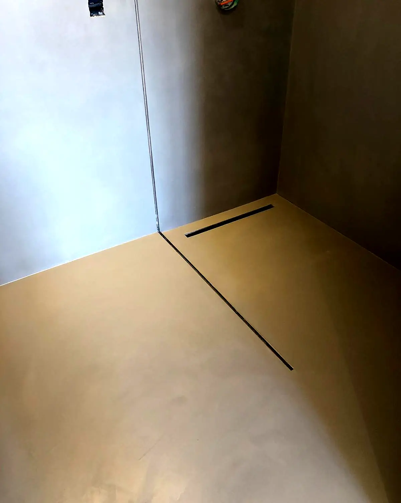
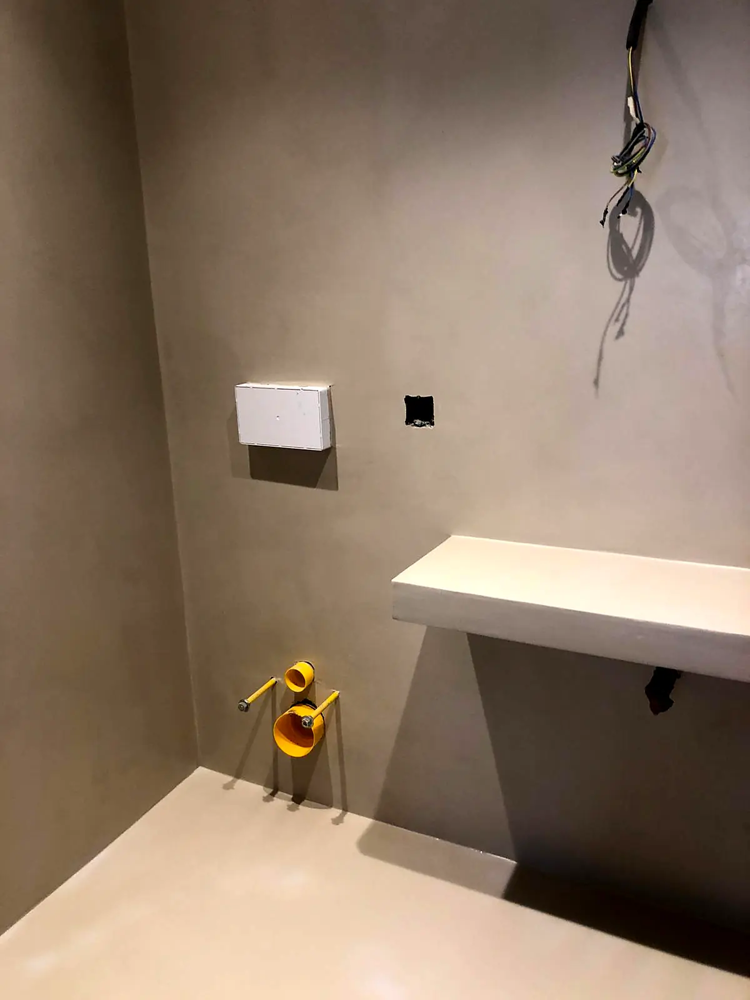
Baño de microcemento con ducha de obra
Suelo, paredes y plato de ducha en un mismo revestimiento continuo, con desagüe lineal y murete de obra.
Leer el casoObras documentadas con su estado inicial, la preparación y el resultado. Más abajo, fotos agrupadas por tipo de trabajo.


Suelo, paredes y plato de ducha en un mismo revestimiento continuo, con desagüe lineal y murete de obra.
Leer el caso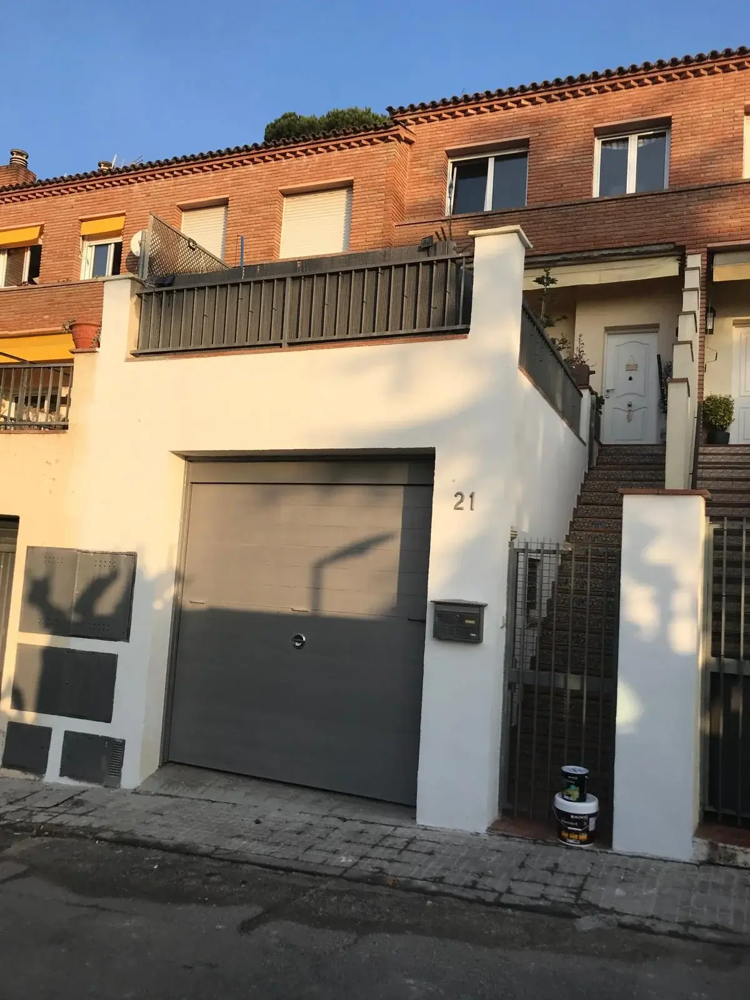
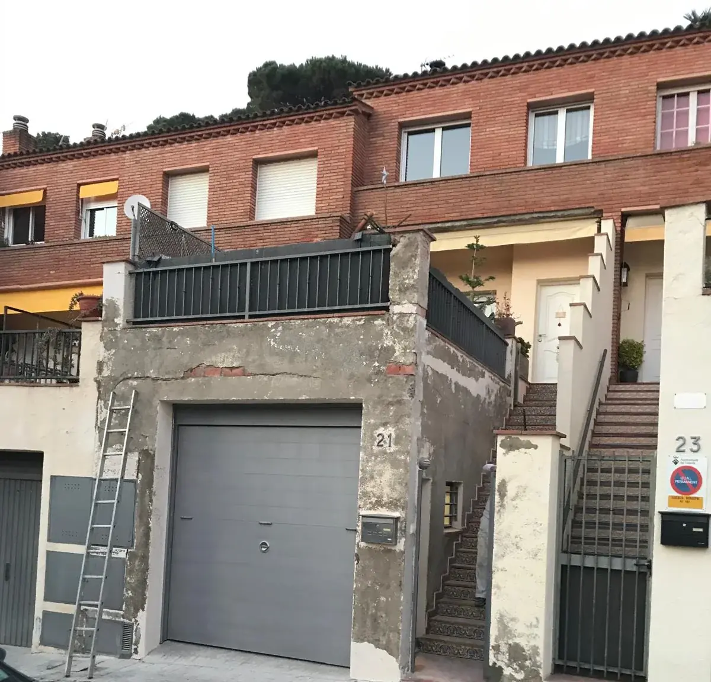
Pilar y muro con el revoque desprendido. Reparación del soporte y fachada pintada de nuevo.
Leer el caso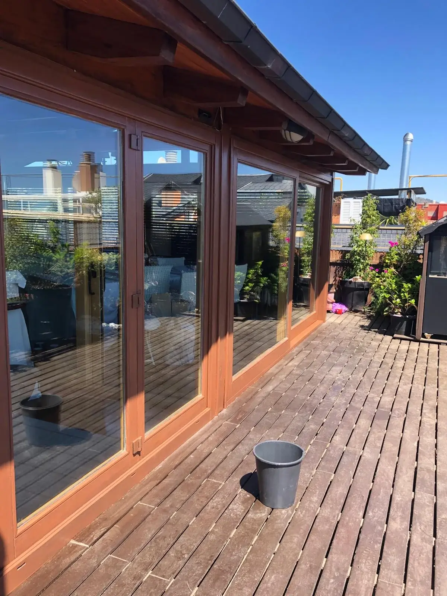
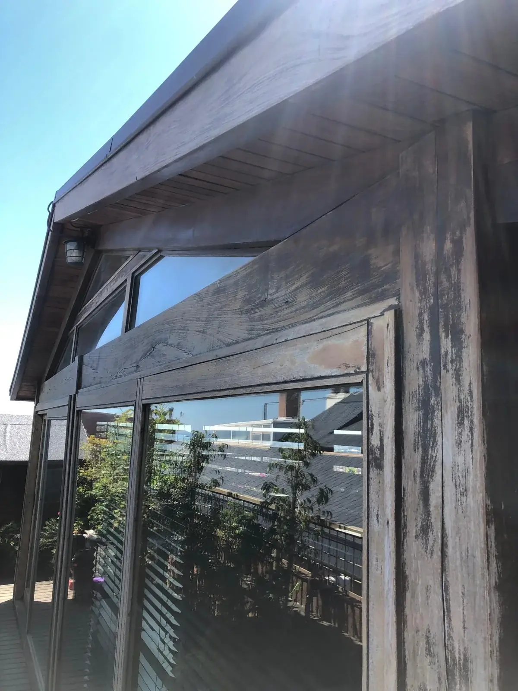
Marcos y vigas agrisados por el sol. Lijado y barniz para recuperar la madera.
Leer el caso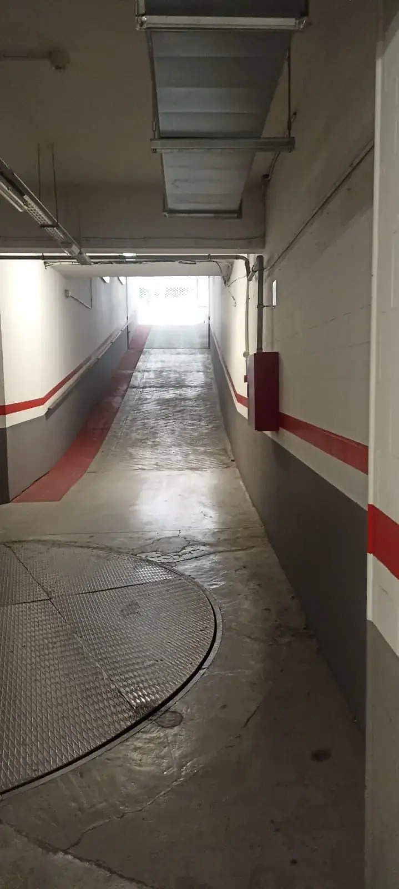
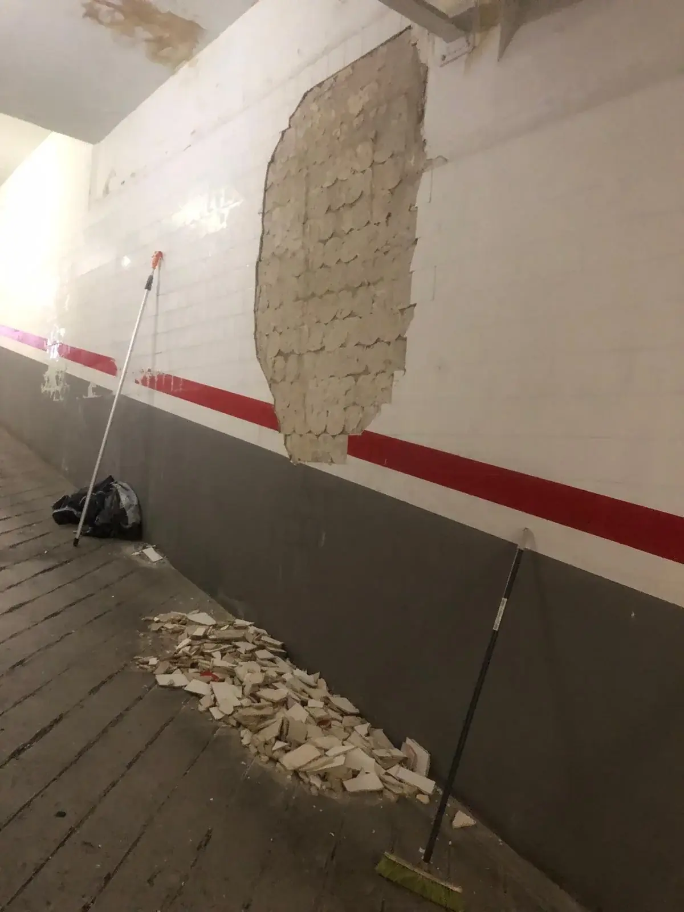
Paredes desconchadas en la parte baja. Reparación, zócalo gris y franja de señalización.
Leer el casoUn álbum puede reunir varias obras del mismo tipo. Los casos de arriba documentan una obra concreta.
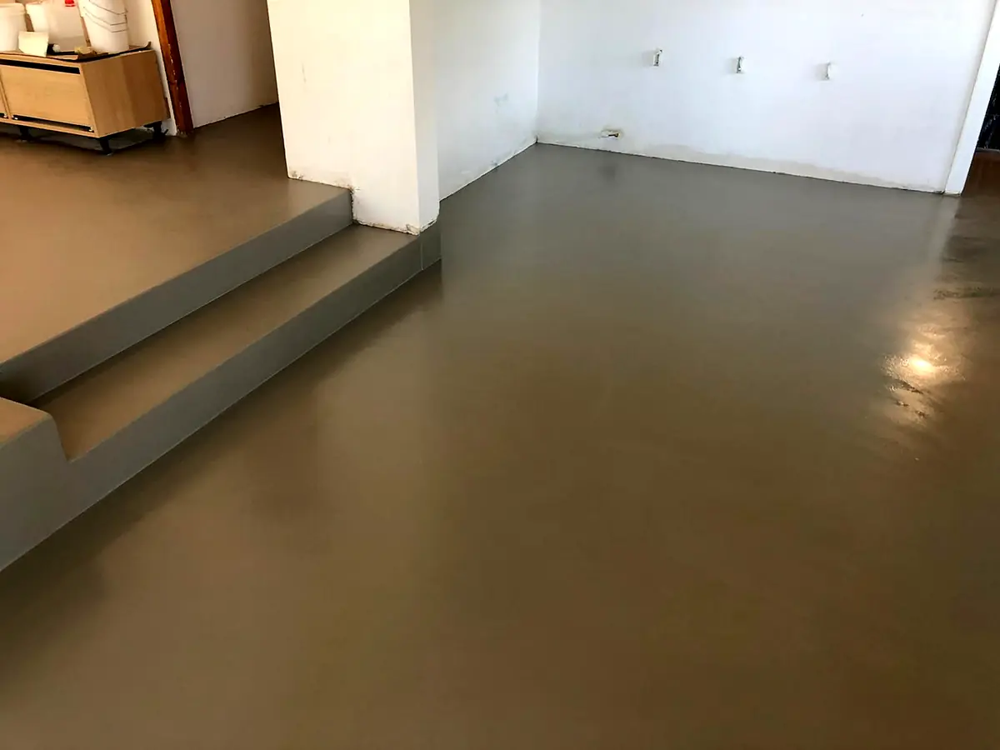
Baños, suelos, terrazas y paredes de varias obras.
Ver 19 fotosFotos de reparación y pintura de fachadas.
Ver 25 fotosBarnizado y recuperación de madera exterior.
Ver 17 fotosZonas comunes y garajes.
Ver 7 fotos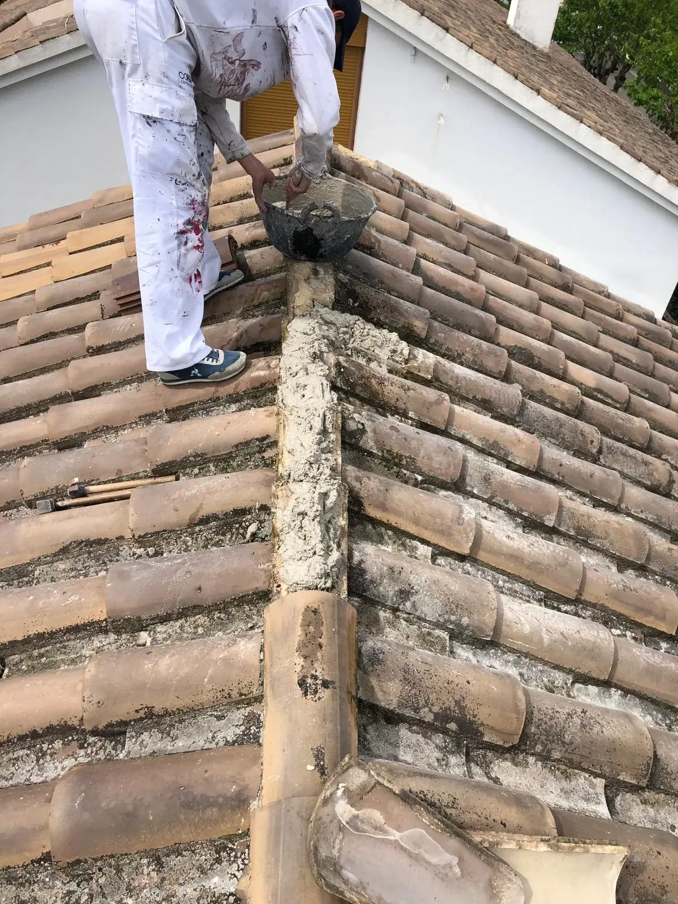
Reparación de cubiertas de teja.
Ver 6 fotos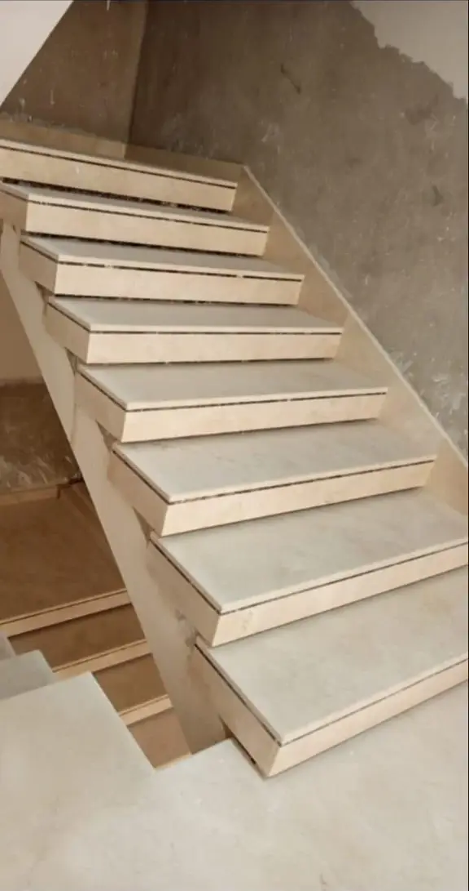
Escalera de mármol y baño.
Ver 11 fotos